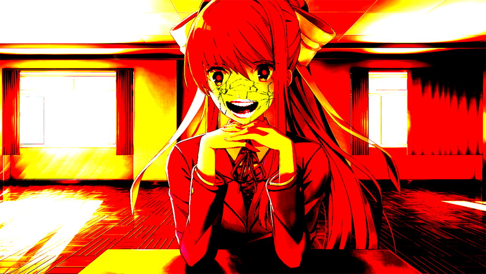

Curiosidades
Estos son las curiosudades que pueden ser encontrados si el jugador sigue unos pasos específicos.
Los ojos de Natsuki
Durante el Acto 2 si escribes un poema usando las palabras de Yuri, pero eliges primero mostrarle el poema a Natsuki, hay una gran posibilidad de que sus ojos se salgan de repente después de ver el poema.
Boca realista de Natsuki
Durante el Acto 2, si escribes un poema usando las palabras de Natsuki, hay una gran posibilidad de que durante la conversación con Yuri cerca del armario, los ojos de Natsuki se conviertan en píxeles negros, su boca se vea realista y comience a decir palabras aleatorias.
Los ojos de Yuri
En el Acto 2, cuando el jugador enfrenta la elección sobre con quien debería pasar el fin de semana, el cursor se moverá involuntariamente hacia el nombre de Monika, sin embargo, si se logra elegir a Yuri o a Natsuki, se dará como resultado una pantalla blanca con dos ojos morados (Parecidos a los ojos obsesivos de Yuri) mirando al jugador por un momento, mientras aparecerá un texto al azar en la parte inferior y un montón de botones con el nombre de Monika, y si seleccionamos cualquiera de ellos todo volverán a la normalidad y se elegirá a Monika.
Ojo Flotante de Yuri
En el Acto 2, durante la primera interacción del jugador con Yuri donde hablan de leer juntos, su ojo derecho lentamente comenzará a moverse hacia la esquina izquierda de la pantalla hasta que desaparezca por completo o hasta que Yuri cambie de expresión.
¿Estás intentando hacer trampa?
Si el jugador intenta copiar los archivos de guardado de un acto diferente durante los Actos 2, 3 y 4, se verá una pantalla negra con el texto "No se pudo cargar el archivo de guardado". Luego de esto, aparecerá Monika preguntándote si estás intentando hacer trampa. Esto puede evitarse copiando el archivo "persistent", el cual almacena los datos persistentes de cada Acto. Curiosamente esta escena también puede ocurrir durante el Acto 4 y Monika seguirá apareciendo a pesar de ser eliminada.
Eliminar a Monika y/o a Sayori"
Al ingresar a los archivos del juego y eliminar a Monika o a Sayori dará como resultado una escena en la que Sayori se volverá auto consciente y actuará de forma desesperada preguntándose quién es y qué está sucediendo, gritando que se detenga. El juego se cerrará automáticamente y, al volverlo a abrir, en vez de la introducción aparecerá una pantalla que mostrará la palabra "END" antes de cambiar a un GIF en blanco y negro de Sayori colgando de una soga. Después de 10 minutos, aparecerá un texto diciendo "Now everyone can be happy", que se traduce como "Ahora todos pueden ser felices".
Recuperando "monika.chr" en el Acto 4
Antes de iniciar el Acto 4 y después de eliminar a Monika, cuando vuelvas a insertar el archivo "monika.chr" en su carpeta, al iniciar el Acto ella te dirá que dejes de torturarla y el juego se cerrará, volviéndose a eliminar el archivo.
Jumpscare de Monika
Durante el Acto 3, si el jugador está grabando el juego con OBS o XSplit durante la parte en la que Monika dice el nombre real del jugador, en lugar de que aparezca ese diálogo, ella lo notará y después de una breve charla asustará al jugador.

Poema glitch de Monika
Si el jugador escribe dos poemas para Natsuki y uno para Yuri en el Acto 2, intentar hablar con Monika provocará al jugador este poema, a lo que Monika se sorprenderá por el error y dice que el juego ha fallado en su poema. El poema tiene un ambiente ruidoso de fondo, con fallas ilegibles en toda la página. Alternativamente, si el juego está en modo de pantalla completa y se juega en Windows, mostrará un BSOD falso en su lugar. El diálogo es el mismo
¿Estás seguro de que quieres salir del juego? glitch
Antes de la versión 1.1.1, si el jugador intentaba salir del juego a través del menú durante la escena del suicidio de Sayori, el mensaje "¿Estás seguro de que quieres salir?" Se distorsionaría y una imagen cortada de Sayori parpadearía rápidamente entre sus versión normal y negativa. Desde entonces se ha eliminado, pero las imágenes aún permanecen
Yuri con pupilas blancas
Durante el Acto 2, si el jugador escribe tres poemas para Yuri, la escena del bebedero se repite. Posteriormente, la pantalla se volverá negra durante un par de segundos, seguido de un primer plano del rostro de Yuri con ojos completamente blancos acompañados de música fuerte y distorsionada. Esto es seguido por un sprite de Yuri con fallas antes de volver a la normalidad.
monika.chr
Este archivo se puede renombrar a un archivo .png ("monika.png"), que dará como resultado una imagen de un anillo llameante con un cuadrado en el centro, que contiene píxeles en blanco y negro. Cuando este cuadrado se traduce a binario, el resultado es una cadena de Base64. Esta cadena, a su vez, puede traducirse, dando como resultado este documento.
natsuki.chr
Este archivo se puede renombrar a un archivo .jpg ("natsuki.jpg"), que dará como resultado una imagen la cual si es puesta como textura en un cono tridimensional mediante un programa de modelado 3D, además de ser invertidos sus colores, parece ser la imagen de una chica de cabello blanco con los ojos completamente en blanco.
sayori.chr
Este archivo se puede renombrar a un archivo .ogg ("sayori.ogg"), que dará como resultado un archivo de audio el cual, al ser pasado por un espectrógrafo, generará un código QR, que al ser escaneado llevará a una página la cual contiene La dirección IP y la información de Host de la página se co-relacionan con la página principal del juego el cual se encuentra aqui.
yuri.chr
Este archivo al ser abierto como un archivo de texto, mostrará un largo texto alfanumérico, el cual si es pasado a Base64 resultará en este documento. Se trata de una historia escrita por Dan Salvato publicada hace varios años.
La historia original mostrada en el documento puede ser encontrada en este link